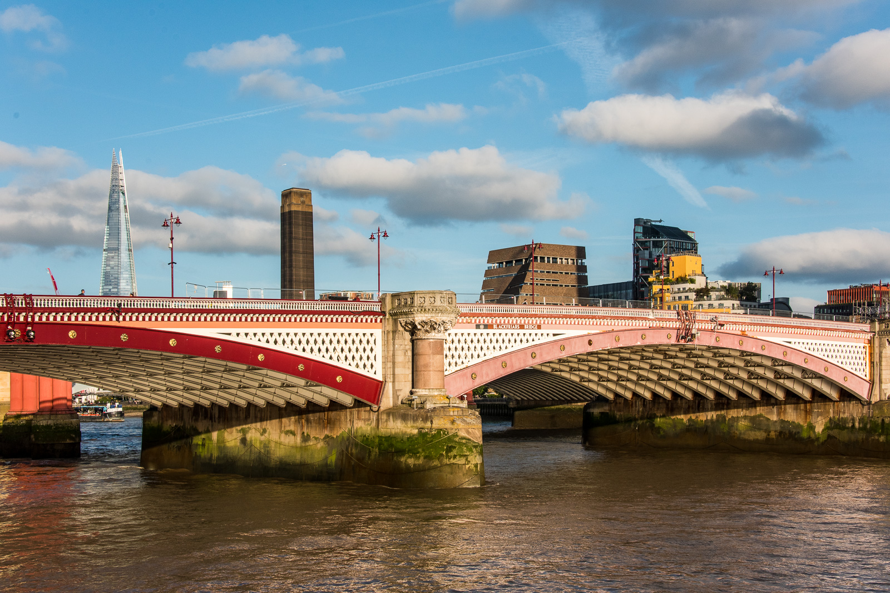
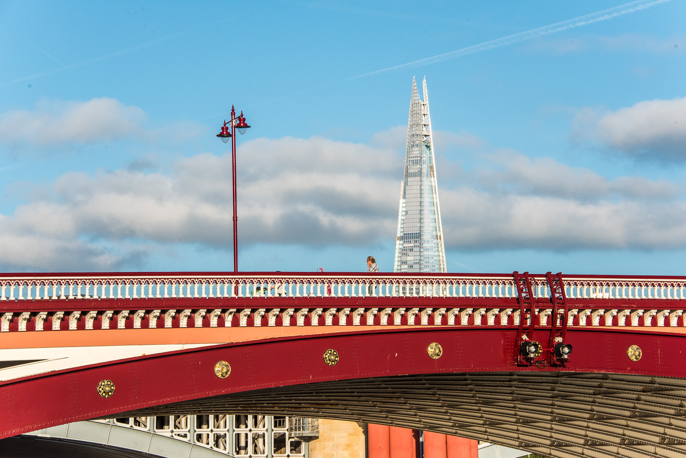
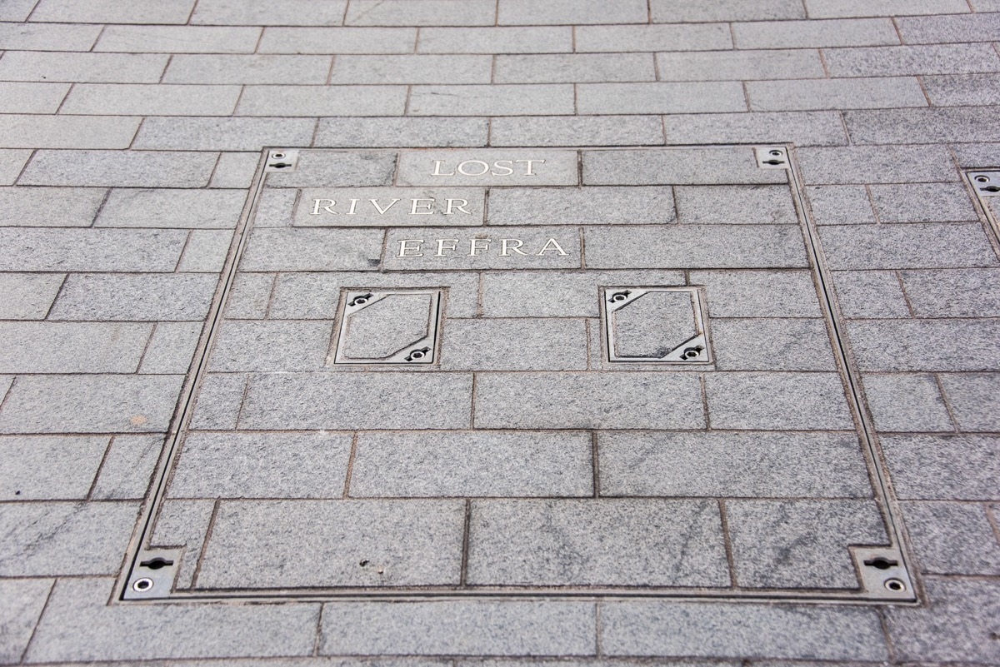
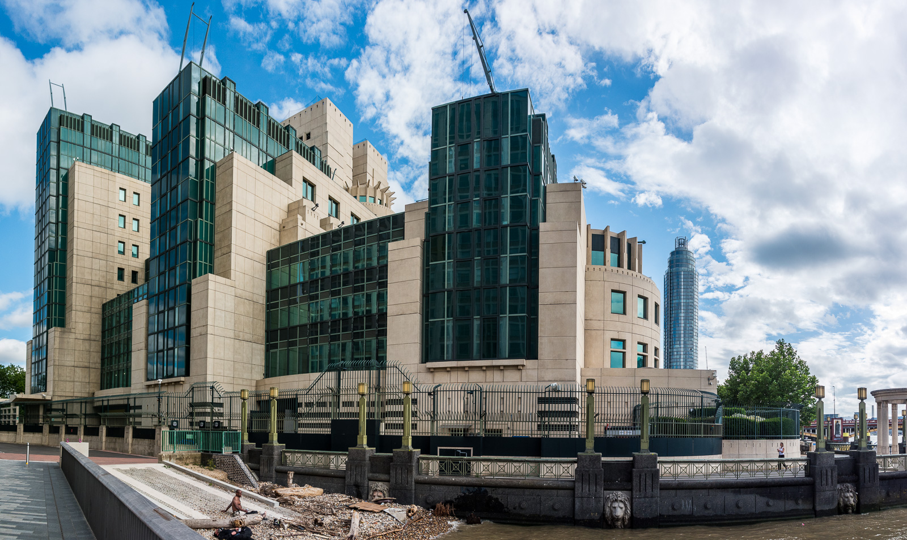
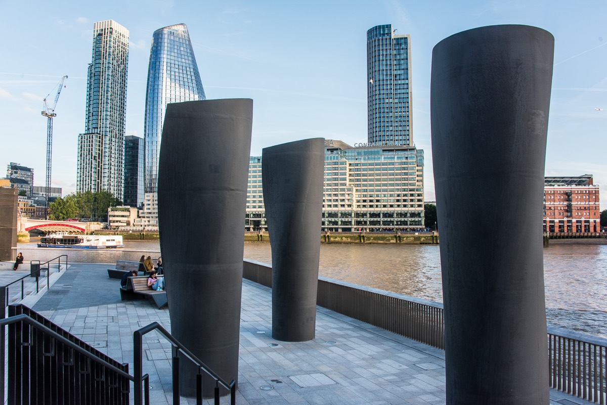
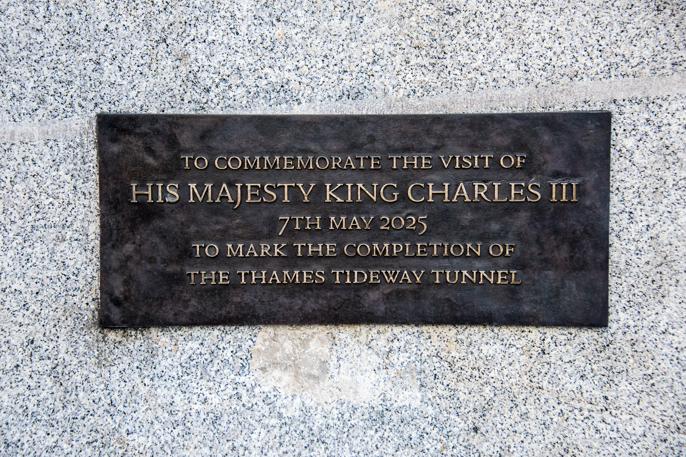
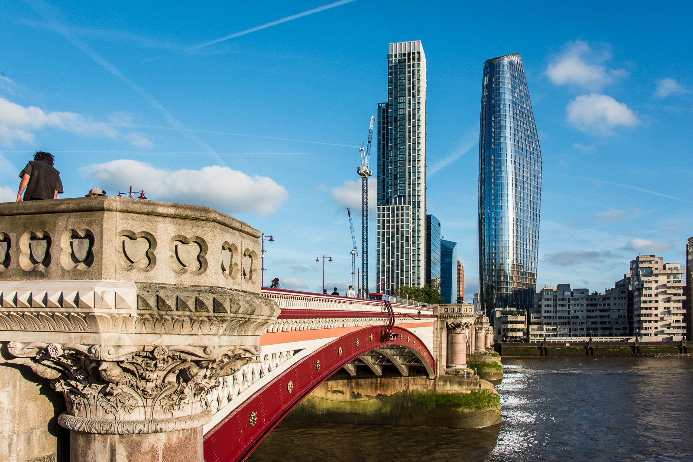
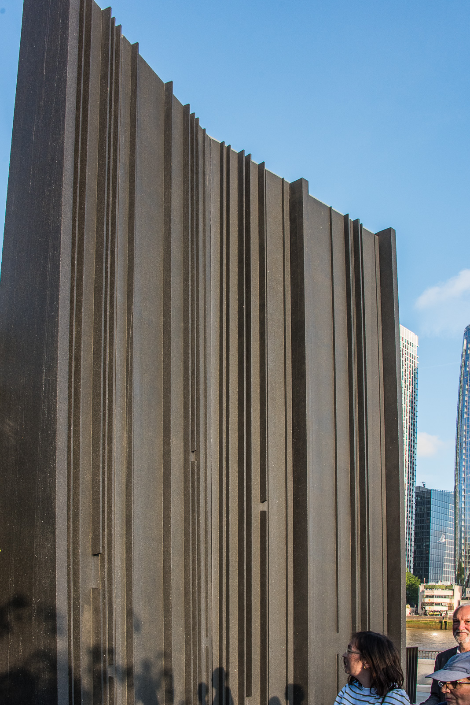

Why Tideway Exists:
London's Sewers & the Great Stink
This tour, led by architects from Hawkins\Brown and joined by an architect-historian, covers three of the new public spaces created above the Thames Tideway Tunnel — London's "super sewer." Hawkins\Brown, working in a joint venture with Spanish contractor FCC and Irish tunnelling specialist Murphy, delivered eight of the project's 26 sites in the central section, working alongside landscape designers Gillespies (also known for the Olympic Park). The project ran from 2015 to 2025.

Before the Victorian sewer system, London's waste flowed into open rivers — the city's "lost rivers" — which carried it into the Thames. In the hot summer of 1858, the rivers dried up and the stench became so severe that Parliament had to suspend its sittings. This became known as the Great Stink.
Parliament responded by forming the Metropolitan Board of Works and commissioning engineer Joseph Bazalgette to solve the problem. Bazalgette enclosed the lost rivers in proper sewer tunnels, intercepted the waste before it reached the Thames, and piped it east to treatment works. The system was built for a population of up to four million; London today has nine million people, and the Victorian sewers have been overwhelmed for decades, spilling raw sewage into the Thames whenever it rains heavily.
Tideway intercepts the same lost rivers Bazalgette once tamed — the Effra, the Tyburn, the Fleet — and drops their flow down vertical shafts into the new tunnel rather than letting it overflow into the Thames during storms. Because central London had so little spare space, these drop shafts were built within existing riverside sites, and rather than fencing them off after construction, Tideway gave the surface back to Londoners as new public parks.
Effra Key:
a Split Site & a Hidden River
The tour begins at Effra Key, which intercepts the River Effra — one of London's lost rivers, now entirely culverted underground. This is an unusual site: because of its proximity to the bridge and to the nearby MI6 building (referred to obliquely throughout the tour as "SIS"), the river interception point and the actual drop shaft had to be located in two separate areas of the site.

The Effra's outfall historically emerged just on the other side of the building here — site of the famous duck tours that used to launch into the Thames, though the guide is uncertain whether they still operate.
Vauxhall Bridge:
Alfred Drury's Sculptures
The first Vauxhall Bridge was built around 1815, creating a great Georgian thoroughfare from western London down to Rochester, Dover and Canterbury — still visible in the oval space and rows of listed Georgian houses on Camberwell New Road and Peckham Road. The current bridge, built around 1900 by the London County Council, was one of the earliest steel bridges in London, built wider and deeper than its predecessor to carry the expanding tram network.

When the bridge's original design was deemed architecturally unsatisfactory, the Victorian architect Norman Shaw was brought out of retirement to improve it. The result includes monumental bronze figures by sculptor Alfred Drury — a leading figure in the "New Sculpture" movement, known also for his statue of Sir Joshua Reynolds outside the Royal Academy and the City of London War Memorial outside the Royal Exchange.
The downstream figures represent science, agriculture, industry, architecture and the decorative arts; the upstream figures are by F.W. Pomeroy, another leading sculptor of the period. The narrow traffic island beside the bridge gives an unusually close view of these sculptures — most Londoners crossing the bridge never see them properly.
The site also features an artwork by London-based artist Richard Wentworth — a letter to passers-by questioning their relationship with the city, rendered in a typeface called Doves.
The Doves Type was created for the Doves Press in Hammersmith. According to the story the guide tells, the partners of the press had a bitter falling out, and one of them threw the metal type — the individual letter "sorts" — into the Thames, deliberately destroying the typeface forever. Decades later, mudlarks began finding individual sorts in the river, and a type designer named Robert Green spent years piecing the typeface back together from the recovered letters and digitising it. When Hawkins\Brown began this project, they contacted Green and asked to use the revived typeface — which now appears on inscriptions across all the Tideway sites, marking each site's name and its depth above the tunnel.
Standard architectural elements recur across all the Hawkins\Brown Tideway sites: a particular open balustrade design with only vertical elements (deliberately avoiding horizontals, so as not to obstruct river views), granite paving and bronze detailing, and decorative vent columns shaped to echo computational fluid dynamics — the mathematical modelling of how sewage flows — rather than simply the spiral of descending water — engineered this way so that water doesn't simply free-fall and erode the concrete base over decades.
The Royal Doulton Works
& Bronze Toilets
The Effra Key site sits on what was once one of the largest stretches of urban beach in central London, which inspired the landscape design — paving that mimics a receding tide, with a gradient from light to dark, and timber benches shaped like driftwood washed up on shore.
Among the artworks here are bronze-cast toilet-shaped benches by artist Richard Wentworth — a playful reference to the fact that visitors are sitting directly above a sewer, and to the nearby Royal Doulton Sanitary Ware factory that once dominated this stretch of riverside. The factory, demolished after the Clean Air Acts of the 1950s closed London's polluting industries, made its early fortune supplying salt-glazed sewer pipes to the Metropolitan Board of Works for Bazalgette's original sewer network.
The surviving Doulton building nearby — now dwarfed by the scale of the original works — showcases the company's celebrated architectural terracotta, known in the trade as faience (after Faenza, the Italian ceramic-producing town). Henry Doulton, encouraged by Prince Albert and Henry Cole, exhibited Doulton's decorative ware at the Great Exhibition of 1851 and the International Exhibition of 1862. The frieze on the building was modelled by George Tinworth, the factory's chief modeller, and depicts Henry Doulton himself alongside the women who were major employers in the factory's decorating workshops.
Doulton's Carrara Ware — their branded glazed terracotta — appears across London: the Savoy Hotel facade, the Russell Hotel on Russell Square, Thomas Collcutt's Palace Theatre on Cambridge Circus (current home of the Harry Potter stage play), and Finlay's Corner near London Bridge, which the guide's own practice restored. The material's appeal was practical as much as decorative — fired ceramic is harder than stone and resistant to weathering, which is why it was later adopted extensively for London Underground station tiling, where surfaces needed to be both decorative and washable.
Further along, the site passes Lambeth Palace's medieval gatehouse (built around 1480–90 by Archbishop Morton, in the Tudor diaper-pattern brick that predates the Doulton terracotta by 400 years), St Mary's Lambeth church, and St Thomas' Hospital — designed by Henry Currey in consultation with Florence Nightingale following her work in the Crimean War, its pavilion plan designed to maximise light and air circulation as part of the new Victorian science of sanitation.
Floodable Terraces &
the Port of London's Anxiety
Tyburn Key intercepts the River Tyburn, another of London's lost rivers. The site's granite facade is engraved with circular profiles representing the different cross-sections of Bazalgette's original Victorian tunnels — some perfectly round, some flat-bottomed, some egg-shaped — a deliberate homage to the engineering experimentation that shaped how water flowed through the original system.
One of the more striking design decisions here: rather than building a solid flood wall, Hawkins\Brown raised the public ground to flood defence level and created stepped, floodable terraces below it. At very high tide, or when a large boat passes, visitors standing on the lowest terrace can get their feet wet.
This proved controversial during consultation with the Port of London Authority, whose concerns centred on safety — people falling in, or interfering with the navigation channel — rather than aesthetics. The terraces include a moveable barrier system that can be deployed to close off the lower level when needed. The negotiation, the team notes, took considerable time.
Richard Wentworth's artwork appears again here, in the form of bronze-cast sandbags scattered across the flood terraces — realistic enough that visitors sometimes mistake them for the real thing. The reference, again, is to London's "make do and mend" culture, disrupting the formality of this otherwise serious civic site.
This is one of the only Tideway sites where the ventilation columns are genuine cast bronze rather than painted ductile iron — a material choice reflecting the site's proximity to Westminster's most sensitive heritage context. The existing listed river wall, made of Cornish granite from the De Lank quarry, was matched as closely as possible in the new construction, though built using precast concrete-faced panels for speed rather than solid granite blocks. Below the waterline, vertical timber fenders and rough granite panels provide texture for marine organisms to colonise, helping restore the river ecology the new tunnel is designed to protect.
Bazalgette's Memorial &
the Forgotten Charles Henry Driver
The tour passes the Victoria Embankment Gardens — a gift from the Metropolitan Board of Works to the city, transforming what had been a chaotic stretch of private wharves and commercial quays (some nineteen separate jetties once stood between Blackfriars and Westminster bridges) into one of London's first great public parks.


Joseph Bazalgette's memorial here, with its Renaissance-inspired marble surround, commemorates the engineer who built the original sewer network, "putting the river in chains" after decades of pollution and political inaction. But the guide notes a quieter injustice: Bazalgette ran the project and pushed it through Parliament, but the detailed design of the cast-iron lamp standards, benches and granite steps was largely the work of architect Charles Henry Driver, whose contribution was only acknowledged in his own obituary.
Driver — designer of Fenchurch Street, Peckham Rye, and Denmark Hill stations — was part of a generation of architects who recognised that cast iron could be both structurally useful and aesthetically rich. The guide, who has restored several of Driver's railway stations professionally, makes the point that this collaboration between engineers and architect-decorators is exactly what the new Tideway sites are continuing.
The lamp standards along the embankment came from a competition that produced no clear single winner — three different designs were ultimately installed side by side, one of them Bazalgette's own.
Nearby, the granite piers of the old Hungerford Suspension Bridge — designed by Isambard Kingdom Brunel in the 1840s, demolished when the railway came through to build Charing Cross station — survive, subsumed into the embankment. The bridge's chains were reused at Brunel's Clifton Suspension Bridge in Bristol, which still carries them today.
Nathan Coley's Sculptures &
the Lions That Drown London
The tour's final stop is the largest site in the entire Tideway project, intercepting the River Fleet — London's largest lost river, which runs from Hampstead through Camden, past Smithfield Market and outfalls beneath Blackfriars Bridge.


Because the site sits hard against an operational live railway and close to the bridge's foundations, conventional construction was impossible. Engineers built the structure offsite as a giant concrete caisson — essentially a floating concrete boat — in a dry dock, then floated it down the river and into position, flooding the dock to lower it into place. This unusual method is one reason the site occupies so much space, and why it was given the most extensive landscaping of any Tideway site in the project.
Five monumental sculptures titled The Stages (2024) by Turner Prize-nominated Glasgow artist Nathan Coley dominate the site. Coley, working through a competitive selection process alongside the other Tideway artists, produced non-narrative forms that reference the heroic scale of the engineering — particularly the difficulty of achieving the black hole effect of the drop shaft itself. Though they appear solid, the sculptures are panelised and built using the same modern construction methods as the river wall, tied together internally with steel.
"They give opportunities for seating, for performance, for people to have a moment of romance with the river."
— Hawkins\Brown team, describing Nathan Coley's artist brief
Among the most popular features at this site are the original stone lions from the historic river wall, which had to be raised to match the new flood-defence ground level. Rather than excavate or hide them behind glass, the team simply lifted the lions on granite plinths to their new height — a solution that has proven unexpectedly successful, allowing visitors (and especially children) to come face to face with them.
London tradition holds that if the lions on the Thames ever drown — that is, if the water rises high enough to submerge them — London itself will sink. The team did not, they admit, factor flood risk modelling around this particular piece of folklore.
The planting scheme here narrates the journey of the River Fleet itself — moving from a woodland character at the top of the site towards a more open, riverine character at the bottom, tracing the river's symbolic path from Hampstead to the Thames. A future kiosk building, shaped to evoke a tunnel boring machine's cutting head, will eventually house a café operator.